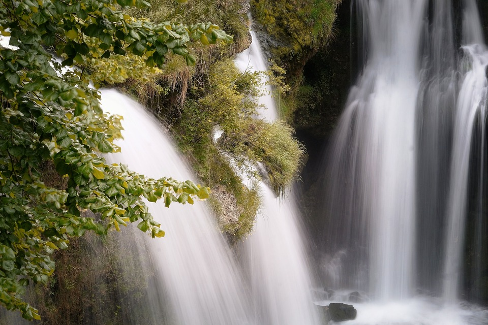

Introducción
Los fluidos están presentes en nuestra vida diaria de formas que muchas veces no notamos. El agua que bebemos, el aire que respiramos, el río que fluye o el viento que mueve las hojas de los árboles son ejemplos de fluidos en acción. Entender cómo se mueven y cómo interactúan con el entorno nos ayuda a explicar fenómenos naturales, como las corrientes de los océanos o el vuelo de los aviones, e incluso cómo funciona nuestro propio cuerpo, por ejemplo, con la circulación de la sangre. Estudiar los fluidos no solo nos permite comprender mejor el mundo, sino que también nos ayuda a diseñar tecnología, como sistemas hidráulicos, autos más rápidos o métodos para cuidar el medio ambiente.
{"id":"18b19cb5-2264-4738-9e05-45bacf166c96","title":"Los fluidos","mindmap":{"root":{"id":"f67f583b-bcc2-4d53-ac99-c897e667a3e3","parentId":null,"text":{"caption":"Los fluidos","font":{"style":"normal","weight":"bold","decoration":"none","size":20,"color":"#000000"}},"offset":{"x":0,"y":0},"foldChildren":false,"branchColor":"#000000","children":[{"id":"9e6f383a-5306-4abd-8876-dacfd5da5219","parentId":"f67f583b-bcc2-4d53-ac99-c897e667a3e3","text":{"caption":"Principios","font":{"style":"normal","weight":"normal","decoration":"none","size":15,"color":"#000000"}},"offset":{"x":-14,"y":188},"foldChildren":false,"branchColor":"#32dcd3","children":[{"id":"f76236e8-b0ba-43b1-aa9c-85853e99fb61","parentId":"9e6f383a-5306-4abd-8876-dacfd5da5219","text":{"caption":"Principio de Arquímedes:\\nUn objeto sumergido en un fluido experimenta una fuerza de empuje igual al peso del fluido desplazado.","font":{"style":"normal","weight":"normal","decoration":"none","size":15,"color":"#000000"}},"offset":{"x":-292,"y":79},"foldChildren":false,"branchColor":"#32dcd3","children":[]},{"id":"94029319-0973-45a7-bf73-d0e59ec87dc0","parentId":"9e6f383a-5306-4abd-8876-dacfd5da5219","text":{"caption":"Principio de Pascal:\\nLa presión aplicada a un fluido se transmite uniformemente en todas las direcciones.","font":{"style":"normal","weight":"normal","decoration":"none","size":15,"color":"#000000"}},"offset":{"x":-174,"y":300},"foldChildren":false,"branchColor":"#32dcd3","children":[]},{"id":"45b1eaf9-d2bc-4c87-8281-66339e53fa87","parentId":"9e6f383a-5306-4abd-8876-dacfd5da5219","text":{"caption":"Ecuación de Bernoulli: La energía total en un fluido en movimiento permanece constante, considerando la energía cinética, potencial y de presión.","font":{"style":"normal","weight":"normal","decoration":"none","size":15,"color":"#000000"}},"offset":{"x":120,"y":198.5999755859375},"foldChildren":false,"branchColor":"#32dcd3","children":[]}]},{"id":"7f2dcb01-378f-4ee2-8821-448fd1f1bdde","parentId":"f67f583b-bcc2-4d53-ac99-c897e667a3e3","text":{"caption":"Propiedades","font":{"style":"normal","weight":"normal","decoration":"none","size":15,"color":"#000000"}},"offset":{"x":242,"y":-2},"foldChildren":false,"branchColor":"#b4faa8","children":[{"id":"307680b1-767e-4ab5-aa90-0d93fa94d903","parentId":"7f2dcb01-378f-4ee2-8821-448fd1f1bdde","text":{"caption":"Presión: Fuerza ejercida por unidad de área (P = F/A).","font":{"style":"normal","weight":"normal","decoration":"none","size":15,"color":"#000000"}},"offset":{"x":113.17138671875,"y":97.17138671875},"foldChildren":false,"branchColor":"#b4faa8","children":[]},{"id":"d9f97aed-8fec-4e9a-9b05-3b75d13f9183","parentId":"7f2dcb01-378f-4ee2-8821-448fd1f1bdde","text":{"caption":"Densidad: Relación entre masa y volumen (ρ = m/V).","font":{"style":"normal","weight":"normal","decoration":"none","size":15,"color":"#000000"}},"offset":{"x":100,"y":-188},"foldChildren":false,"branchColor":"#b4faa8","children":[]},{"id":"9bec6a76-08c8-4097-a8c8-ae6734215b63","parentId":"7f2dcb01-378f-4ee2-8821-448fd1f1bdde","text":{"caption":"Viscosidad: Resistencia interna al flujo.","font":{"style":"normal","weight":"normal","decoration":"none","size":15,"color":"#000000"}},"offset":{"x":292,"y":-32},"foldChildren":false,"branchColor":"#b4faa8","children":[]},{"id":"84aea34e-625f-41d1-ae8f-08a014964e8b","parentId":"7f2dcb01-378f-4ee2-8821-448fd1f1bdde","text":{"caption":"Tensión superficial: Fuerza que reduce la superficie del líquido.","font":{"style":"normal","weight":"normal","decoration":"none","size":15,"color":"#000000"}},"offset":{"x":104,"y":312},"foldChildren":false,"branchColor":"#b4faa8","children":[]}]},{"id":"ddeae028-e4cb-4406-a387-98b98a1ea81d","parentId":"f67f583b-bcc2-4d53-ac99-c897e667a3e3","text":{"caption":"Características","font":{"style":"normal","weight":"normal","decoration":"none","size":15,"color":"#000000"}},"offset":{"x":-275.0000305175781,"y":-5},"foldChildren":false,"branchColor":"#e9d1a7","children":[{"id":"fb4a534a-4976-4b6c-a42e-5dd89369d7f0","parentId":"ddeae028-e4cb-4406-a387-98b98a1ea81d","text":{"caption":"Fluyen","font":{"style":"normal","weight":"normal","decoration":"none","size":15,"color":"#000000"}},"offset":{"x":-88,"y":-176},"foldChildren":false,"branchColor":"#e9d1a7","children":[]},{"id":"e4da4e29-3451-4a17-b960-9dcf71531e6f","parentId":"ddeae028-e4cb-4406-a387-98b98a1ea81d","text":{"caption":"Se adaptan a la forma del recipiente","font":{"style":"normal","weight":"normal","decoration":"none","size":15,"color":"#000000"}},"offset":{"x":-256,"y":-60},"foldChildren":false,"branchColor":"#e9d1a7","children":[]},{"id":"bd1705fd-f43b-4078-bb1a-5c8077ef4ae5","parentId":"ddeae028-e4cb-4406-a387-98b98a1ea81d","text":{"caption":"Compresibilidad/Incompresibilidad\\nLos líquidos son incompresibles.\\nLos gases son compresibles.","font":{"style":"normal","weight":"normal","decoration":"none","size":15,"color":"#000000"}},"offset":{"x":-188,"y":144},"foldChildren":false,"branchColor":"#e9d1a7","children":[]}]}]}},"dates":{"created":1733872976570,"modified":1733879268695},"dimensions":{"x":4000,"y":2000},"autosave":false}
...